Op-Amp Amplifier Circuits
In this chapter
19.1 Inverting amplifier
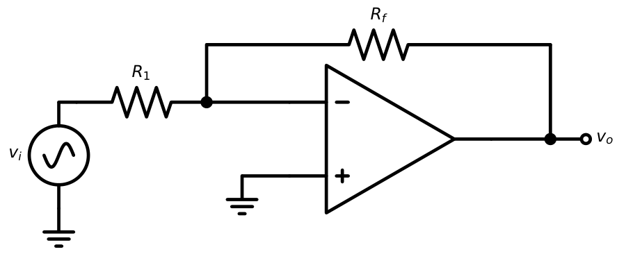
Virtual ground: \(v_-=0\). Current in \(R_1\): \(i=v_i/R_1\). No current enters the input, so it all flows through \(R_f\): \(v_o=0-iR_f\).
\(A_v=\dfrac{v_o}{v_i}=-\dfrac{R_f}{R_1}\), \(R_{in}=R_1\), \(R_{out}\approx0\)
Finite \(A\): \(A_v=-\dfrac{R_f/R_1}{1+\dfrac{1}{A}\left(1+\dfrac{R_f}{R_1}\right)}\)
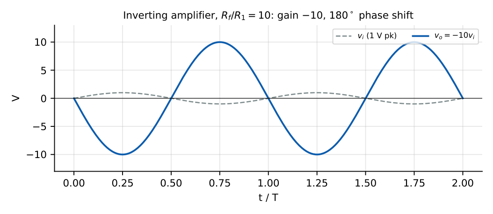
\(R_1=1\) k, \(R_f=10\) k, \(v_i=0.5\) V dc: \(v_o=-5\) V. For \(v_i=2\sin\omega t\) the output would need \(\pm20\) V: clipped at \(\pm V_{sat}\).
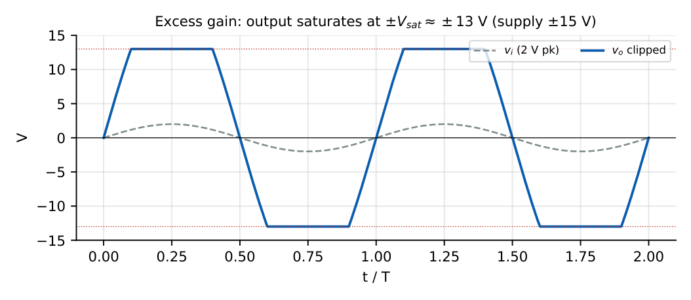
19.2 Non-inverting amplifier
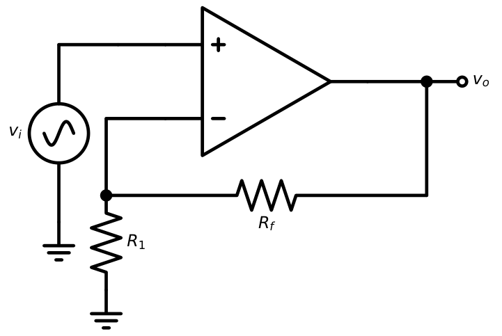
Virtual short: \(v_-=v_i\); the divider gives \(v_-=v_o\,R_1/(R_1+R_f)\).
\(A_v=1+\dfrac{R_f}{R_1}\), \(R_{in}\approx\infty\) (very large), \(R_{out}\approx0\)
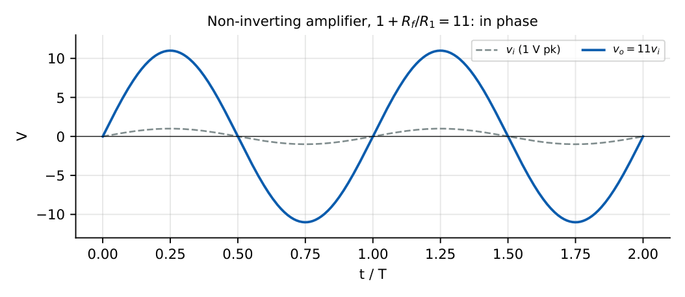
\(R_1=1\) k, \(R_f=10\) k, \(v_i=0.5\) V: \(v_o=5.5\) V. Gain can never be below 1.
19.3 Voltage follower
Set \(R_f=0\) and \(R_1=\infty\): \(A_v=1\). High input resistance, low output resistance: an ideal buffer.
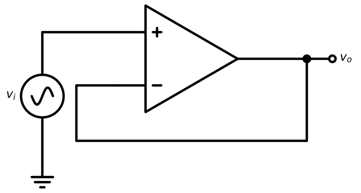
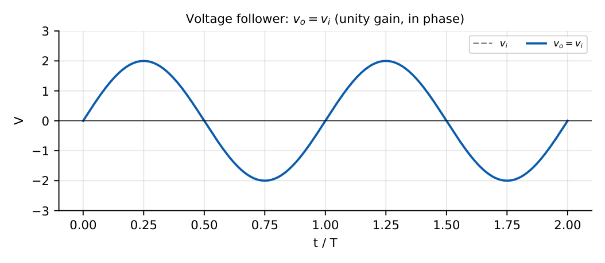
Use: isolate a high-impedance source from a heavy load; bandwidth equals GBW.
19.4 Differential amplifier
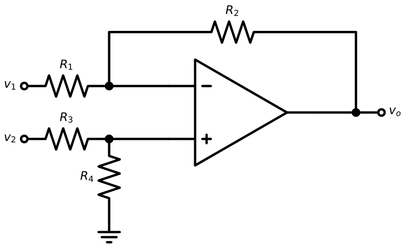
\(v_2\) alone: non-inverting gain \(\left(1+\dfrac{R_2}{R_1}\right)\) times the divider \(\dfrac{R_4}{R_3+R_4}\) at the \(+\) input. \(v_1\) alone: inverting gain \(-\dfrac{R_2}{R_1}\). With \(\dfrac{R_4}{R_3}=\dfrac{R_2}{R_1}\) the total is \[v_o=\frac{R_2}{R_1}\,(v_2-v_1).\]
\(A_d=\dfrac{R_2}{R_1}\), \(R_{id}=2R_1\) (between the inputs), input resistance of the \(v_2\) input \(=R_3+R_4\), of \(v_1\) input \(=R_1\).
Matching tolerance \(\delta\): \(\mathrm{CMRR}\approx\dfrac{1+R_2/R_1}{4\delta}\)
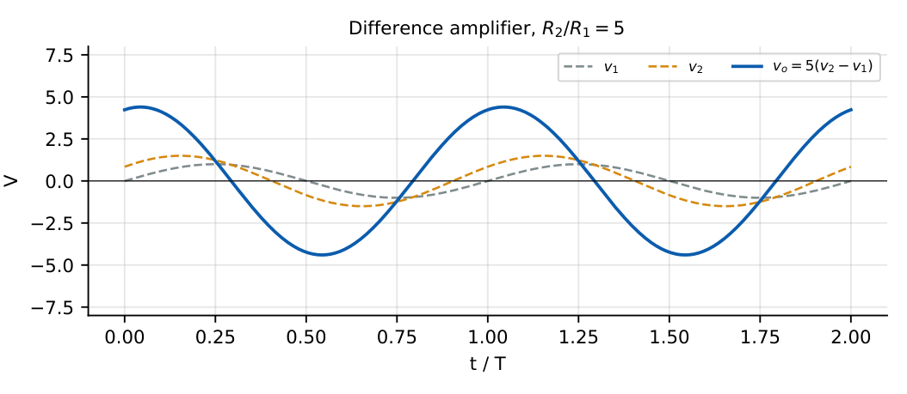
\(R_1=R_3=10\) k, \(R_2=R_4=100\) k, \(v_1=1.0\), \(v_2=1.2\): \(v_o=10\times0.2=2\) V. With \(1\%\) resistors: CMRR \(\approx11/0.04=275\) (49 dB).
19.5 Instrumentation amplifier
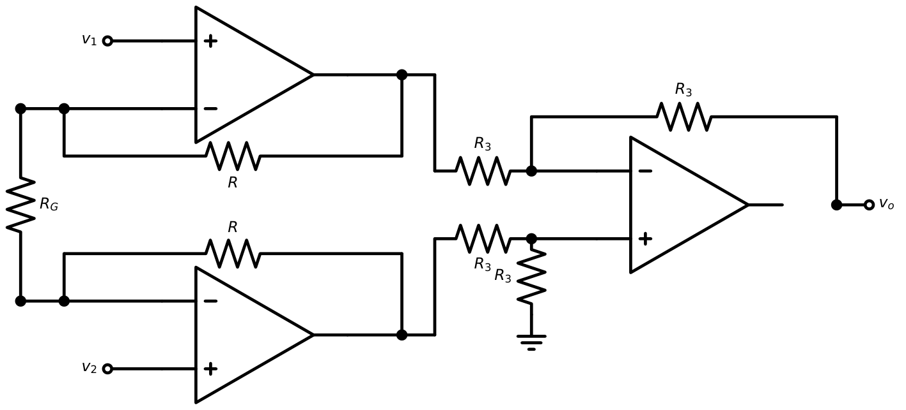
\(v_o=\left(1+\dfrac{2R}{R_G}\right)(v_2-v_1)\) (output difference stage of unity gain)
Very high input resistance on both inputs, gain set by one resistor \(R_G\), high CMRR (common-mode gain of the first stage is 1).
\(R=25\) k, \(R_G=1\) k: gain \(=1+50=51\). For \(v_2-v_1=10\) mV: \(v_o=0.51\) V. Application: strain-gauge and ECG bridge amplifiers.
19.6 Summing amplifier
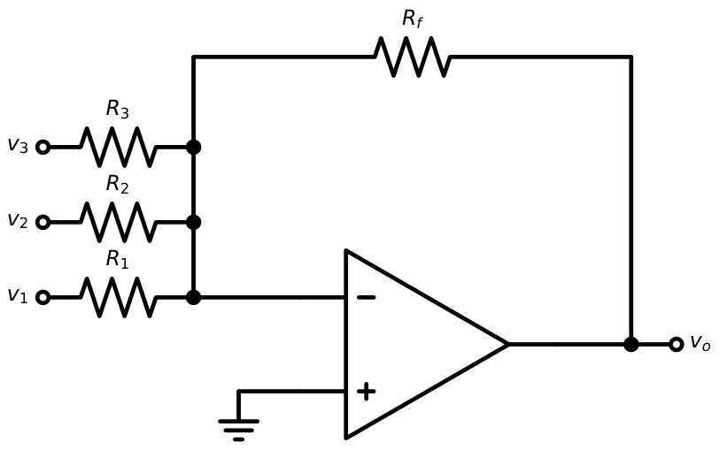
The virtual ground makes each input current independent: \(i_k=v_k/R_k\).
\(v_o=-R_f\left(\dfrac{v_1}{R_1}+\dfrac{v_2}{R_2}+\dfrac{v_3}{R_3}\right)\); with \(R_1=R_2=R_3=R_f\): \(v_o=-(v_1+v_2+v_3)\)
\(R_f=10\) k, \(R_1=10\) k, \(R_2=5\) k, \(R_3=2\) k, \(v_1=v_2=v_3=1\) V: \(v_o=-(1+2+5)=-8\) V.
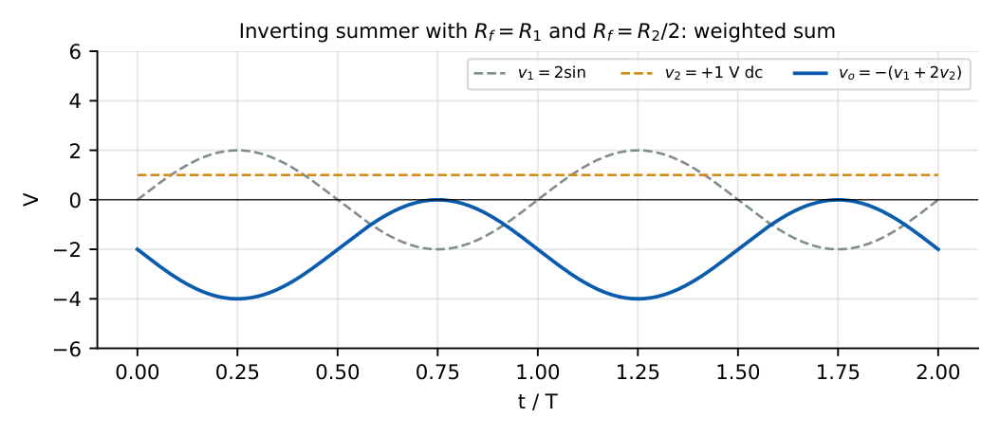
19.7 Weighted summing amplifier
Choosing \(R_k=R_f/w_k\) gives independent weights \(w_k\). With binary weights \(R,2R,4R,\ldots\) the circuit is a simple DAC: \[v_o=-V_{ref}\left(b_{n-1}+\frac{b_{n-2}}{2}+\cdots\right)\frac{R_f}{R}\]
3-bit weighted-resistor DAC, \(R_f=R\), \(V_{ref}=5\) V, code \(101\): \(v_o=-5\,(1+0+\tfrac14)=-6.25\) V.
19.8 Difference amplifier
(Covered in Section 19.4.) A summing/difference combination \(v_o=\dfrac{R_f}{R_1}(v_3-v_1)\) is also used as a subtractor; setting \(R_f=R_1\) gives \(v_o=v_3-v_1\) (unity-gain subtractor).
19.9 Integrator-based amplifiers
The integrator \(v_o=-\dfrac1{RC}\int v_idt\) can also be viewed as an amplifier with frequency-dependent gain \(-1/(j\omega RC)\); adding \(R_f\) in parallel with \(C\) gives the low-pass amplifier of gain \(-R_f/R_1\) and cutoff \(f_c=1/(2\pi R_fC)\) (Chapter 20). A \(C\) in series with \(R_1\) gives a high-pass (DC-blocking) amplifier of gain \(-R_f/R_1\) above \(f_L=1/(2\pi R_1C)\). These are the building blocks for active filters.
19.10 Practical limitations
- Finite gain-bandwidth: closed-loop bandwidth \(=\text{GBW}/(1+R_f/R_1)\).
- Slew rate: distortion of large fast signals.
- Input offset and bias currents: DC output errors, especially at high gain.
- Output swing: clipping \(\approx1\)–\(2\) V inside supply rails; output current limit.
- Input common-mode range: ICMR limits the non-inverting configuration.
- Resistor tolerances: determine gain accuracy and CMRR of differential amplifiers.
- Noise: thermal noise of \(R_f\), \(R_1\) and the amplifier’s \(e_n\), \(i_n\).
19.11 GATE problems
Q1. Ideal op-amp, non-inverting amplifier with \(R_1=1\) k\(\Omega\), \(R_f=9\) k\(\Omega\). Gain is .
Q2. In the summing amplifier with \(R_f=R_1=R_2=10\) k\(\Omega\), \(v_1=1\) V, \(v_2=-3\) V: \(v_o=\) V.
Q3. Difference amplifier \(R_1=R_3=1\) k, \(R_2=R_4=10\) k. \(v_1=2.00\) V, \(v_2=2.05\) V. \(v_o=\) V.
Q4. Instrumentation amplifier with \(R=50\) k\(\Omega\), \(R_G=2\) k\(\Omega\). Overall gain is .
Q5. Voltage follower with source resistance \(10\) k\(\Omega\) driving a \(100\ \Omega\) load: the gain from source to load is nearest to (A) 0.01 (B) 0.5 (C) 1 (D) 100.
Q6. A non-inverting amplifier of gain 10 has input \(1.5\sin\omega t\) V and saturation limits \(\pm12\) V. The output is (A) undistorted (B) clipped at \(\pm12\) V (C) zero (D) DC.
Answers: Q1: \(1+9=10\). Q2: \(-(1-3)=+2\) V. Q3: \(10\times0.05=0.5\) V. Q4: \(1+2\times50/2=51\). Q5: (C), follower has infinite \(R_{in}\): no loading. Q6: ideal output would be \(\pm15\) V, beyond \(\pm12\) V: clipped, (B).
- Design an inverting amplifier with \(A_v=-25\) and \(R_{in}=4\) k\(\Omega\). [\(R_1=4\) k, \(R_f=100\) k]
- Design a non-inverting amplifier with gain 6 using \(R_1=2\) k\(\Omega\). [\(R_f=10\) k]
- 3-input inverting summer (\(R_f=12\) k) with weights \(1,2,3\). [\(R_1=12\) k, \(R_2=6\) k, \(R_3=4\) k]
- Why is an instrumentation amplifier better than a single op-amp differential amplifier? [High, balanced input resistance; single-resistor gain; higher CMRR]